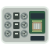

Charts shown on the map DEMO
Viewed as in the reference photo. Labels identify socket positions, not Corsair socket numbers or electrical pinouts.
Reference view; verify header orientation before wiring.
Blue joins the capped pins; green resources are enabled and red resources disabled. Pin diagrams use the manual's 1–2–3 order, not the rotated chassis view.
Read-only reference, not a control. Lane allocation does not measure negotiated PCIe speed. Do not move caps on a powered system.
Official manual · revision 1.30, printed page 26
Drag a grip to reorder. With a keyboard, focus a grip and use the arrow keys. Table headings can also be dragged; on touch, press and hold first.
CPU is a share of the whole server; memory is container working set or process RSS. Disk is read + write throughput, not drive utilization. Network is receive + send, not a percentage of the primary link. Shared network namespaces are counted once on the owner; individual process network activity is unavailable.
Expand a row for its host processes. Container CPU/memory/disk accounting comes from Docker/cgroups, not a sum of process snapshots. Shared memory, buffering, child exits and sampling boundaries can make the numbers differ. NVIDIA compute/encode/decode activity and framebuffer memory are optional and depend on driver support. Missing, stale, first-sample or unsupported values are shown as “—”, never invented zeros.
Read-only: there are no stop, restart, kill or server-edit controls. Process arguments and environment variables are never included. Icons load from the same public icon sources used by Homepage.
On iPhone or iPad, open in Safari and choose Share → Add to Home Screen. On Android, choose Install app or Add to Home screen from the browser menu.
Select hardware for performance and Linux devices, or switch to Connectors for pin details. Viewing controls do not change the server.
Disk bay/socket assignments are display mappings, not verified physical locations. Rear fans use an assumed 2000 RPM; other missing readings stay unavailable.